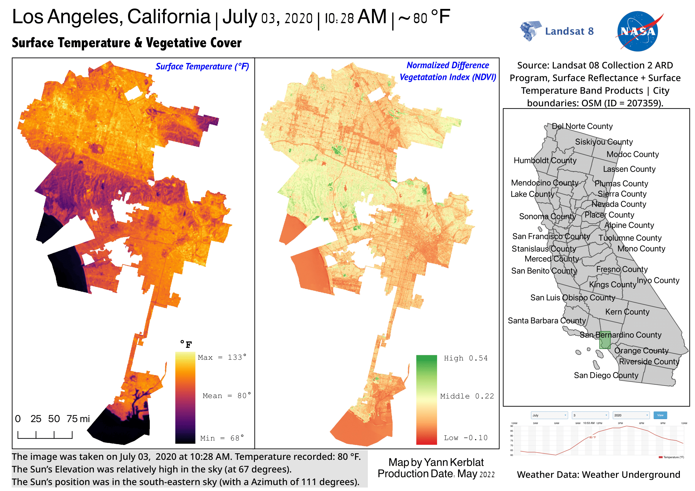
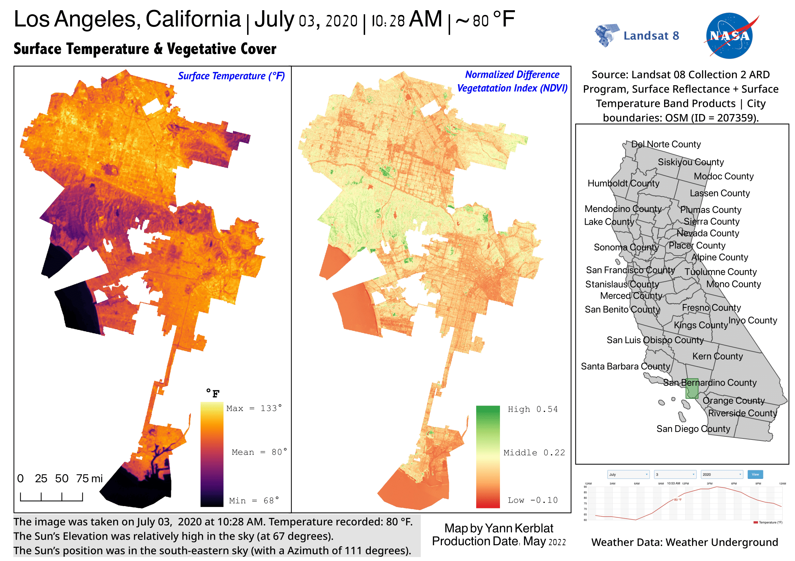

Geographic Information Systems (GIS) - Part B
This selection of GIS products were made with QGIS and cover different use cases, ranging from multi-criteria suitability analysis for potential Internally Displaced Populations (IDP) camps in Uganda to georeferencing 311 rodent-related complaints in NYC during the COVID-19 pandemic.
 



Remote Sensing & Geospatial Analysis
Remote sensing technology and raster classification methods are used to observe changes over time (temporal comparison) in terms of water scarcity in Lake Mead (Nevada), or to map out thermal amplitude patterns across the city of Los Angeles in July 2020.
GIS components & methodologies include:
- Testing different datasets (CSV, SHP, GeoJSON, TIFF)
- Geocoding latitude and longitude coordinates
- Conducting Zonal Statistics for manipulation of spatial and demographic data
- Testing different symbolization strategies (proportional, categorical, dot density, heatmaps)
- Mapping with raster data & features reclassification (i.e. determining suitability level of a given terrain)
- Analyzing Digital Elevation Models (DEMs) with different raster surfaces (hillside, aspect, contours, slope)
- Converting rasters into vector features (and vice versa)
- Use classification techniques for remote sensing imagery (Landsat or Sentinel) through multispectral imagery and band combinations to facilitate comparisons overtime and interpret remote sensing indices (NDVI, Land Surface Temperature)
Tools & Data Sources
- QGIS
- OpenStreetMap (OSM)
- Data sources: referenced on each displayed document
Tools & Data Sources
- Visual Design & Prototyping through Figma
- HTML5, CSS3 & Javascript
- Scrollytelling(Scrollama)
- D3.JS (to setup the data-driven timeline)
- Typography refinement via DaFont & Font Squirrel